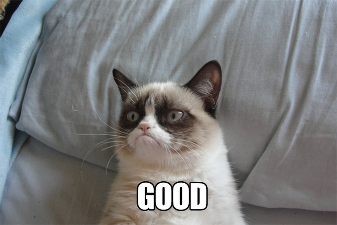
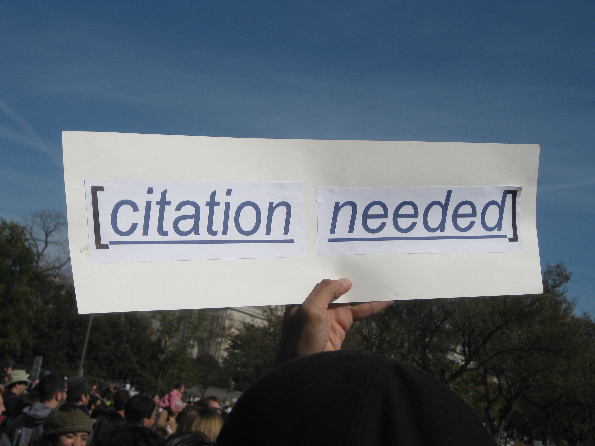
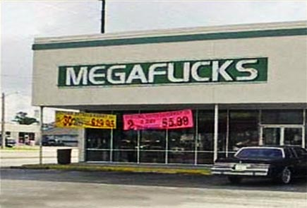

What do you call an alligator in a vest? An investigator.
http://www.savethevowels.org/talks/writing
## Writing Readably and Reading Writably Will Styler - Spring GTP Intensive 2014
Silly “grammar rules”
Style Guides, APA, MLA, and other branches of Law
Avoiding Plagiarism
The specific writing conventions in your field
Finding your muse
How to plan a paper
How to read things so you’ll be able to write about them
How to write so that your reader knows you don’t hate them.
| ## So, you need to write a big paper… |
| ## Who am I writing for? * Your professor or advisor? * Your dissertation committee? * People in your field * Everybody! |
| ### This will help determine the level and register of the paper |
What can I avoid covering?
What’s already done for me?
How can I cite it?
Do I have to light any candles at anybody’s altar?
How is my committee likely to object?
An outline
A Mind-Map
An “elevator speech”
“If I don’t cover these 10 concepts or arguments well by the end of the paper, I will have failed”
How do you plan your writing?
| ## Academic Reading is a pie-eating contest |
You do not have time to savor each paper
You cannot approach these papers delicately
You have more papers available than you could ever possibly read
It’s all about the prize

| # How to win a paper-eating contest |
Reading research papers is scary
You will feel stupid
You will not understand everything
Google “Impostor Syndrome”. You’re not alone.
Your advisor
Papers you’ve already got
| # Then, for each paper… |
## Step 3: Read the abstract.
There are lots of papers which look interesting at a glance, but are worthless for you.
If the paper is no longer interesting then Banish it!
## Step 4: Read the Intro/Conclusion/Final Discussion
Introductions are great for finding citations, and overviews of existing literature.
Skip over the middle bit for now.
Conclusions are more concise and include enough detail to give you a good idea of what actually was done.
If the paper is no longer interesting, mine the citations then Banish it!
Some papers are only worth reading the introduction and the conclusion.
Some are worth skimming.
Some are worth reading.
Some are worth tearing apart and gnawing every last bit of knowledge off of their bones.
You can always come back later!
Mine the citations for papers which might be interesting
Stick it someplace in your computer or desk where you don’t have to stare at it everyday, but can find it later.
Programs like BibDesk
(Mac) or Mendeley are great
for this.
Pick and choose your sections
What story are they telling?
Try to figure out what the author is doing
Read purposefully
Take some notes for later
This will often get skipped, as it’s VERY time-consuming
If you don’t understand something, search the earlier sections until you do.
Some gaps mean that the author messed up.
Some show an experiment or follow-up that you can do!
This is that “gnawing every last bit of knowledge off of bones” thing.
## Step 7: Skim once more and file!
This cements everything into your head.
File the paper away so you can find it easily.
Assign keywords
Assign papers to different points in your plan
“(Use Solomon 2015 to discuss child speech perception)”
If it ain’t broke, don’t fix it!
What’s interesting/noteworthy/controversial in the field
Who proved what
What’s unknown
What you want to teach the world.
# Now, you can write a paper
### … but we want to write a good paper.
You want your students to understand what you’re saying.
It’s your responsibility to get the point across to all the students.
If everybody in the class fails the test, it’s your fault.
You want your readers to understand what you’re saying.
It’s your responsibility to get the point across to all the readers.
If the readers don’t get it, it’s your fault
| ### There are lots of books and sites out there on writing well. |
| ### They’re nice. |



 |
|---|
# Boring is bad!
If this paragraph/section/page isn’t helping your plans, don’t include it!
(“Placating your committee” is sometimes a form of “helping your plan”)
### “A Good paper is like a ninja: small enough to move quickly, but big enough to get the job done”
Revision adds redundancy
Go back through and trim so you’re not explaining the same thing twice.
Your book about a crazed boat captain does not need 18 pages on the rendering of whale blubber.
(Yes, Herman Melville, I’m talking to you.)
“That said, in light of the previously discussed results of the present study, it becomes eminently clear that the overall impression, foundations, and understandings espoused the in Waterson paper discussed previously (2006) may not form a reliable basis for departure for future research, and should be reevaluated.”
“This contradicts Waterson 2006.”
Which author hates you?
Who here naturally cares about the acoustics of vowel nasality? If you don’t show the reader why she should care, she won’t.
|  |
| # Citation-related evils |
“Will had toast for breakfast this morning, and tense vowels are longer than lax vowels (Rositzke 1931)”
Make it clear what you’re citing, and where the end of the citation is.
Facts without sources are unusable.
You want people to see the foundations of your research.
Uncited papers smell like plagiarism.
Pay it forward.
“People use language to communicate. (Buckweiler 2003)”
You’re being a pedantic twit. (Styler 2014)
# Sins against clarity
When you take them to the middle of nowhere without a plan, they’ll get distracted
A known plan makes reading easier.
End your intro with a “Here’s what we’re gonna do” section.

This allows readers to brace themselves for a change.
It keeps them from flying off the highway.
Any time you’ve had to change your thinking, let them change theirs.
Your points are always clear to you.
This has no relation to the reader’s experience.
Make your points explicit more often than you think you need to.
Your commitee will never tell you “You made this too
clear”.
People need to understand your process to evaluate it.
“Step 1: Record some people. Step 2: ???. Step 3: Significant data!” is not a valid structure.
Journal editors will slap you around for this.
(When a vowel pops up between two consonants which would otherwise be awkward to pronounce. Like “Fishes”)
Definitions on first use are a show of mercy for your reader.
Define words which you might not expect a Freshman to understand.
Don’t forget to define acronyms too!
Adjust for your audience.
A paper is like a chair.
You need to sit on it for a few days before you can trust it.
Don’t touch your paper for 2-3 days, then re-read.
Sometimes things that made sense to past-you don’t make sense to present-you.
Fix them!
The Writing Center at Norlin offers editing!
 # Presentation Trainwrecks
# Presentation Trainwrecks

don’t make headers indistinguishable from content everybody loves that, right? it really improves readability.
# Language Issues
If you’re paper has alot of problesm wit typoe, its realy distracting
A poorly-edited paper takes steam away from the actual arguments.
Focus on grammatical issues that make things unclear.
Ignore the made up issues found in style guides
If I can’t understand your language, you can’t make your point
See The Writing Center at Norlin for free help.
| ## What forms of writing sadism have I missed? |
… and most importantly of all…
### Remember that writing is teaching, and you want to be good to your students!
Will Styler - will@savethevowels.org
http://savethevowels.org/talks/writing